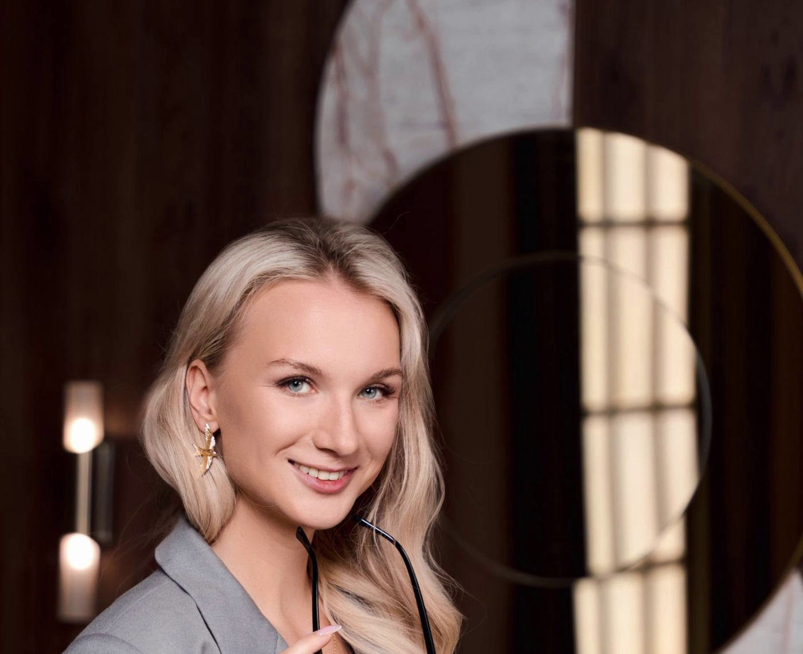
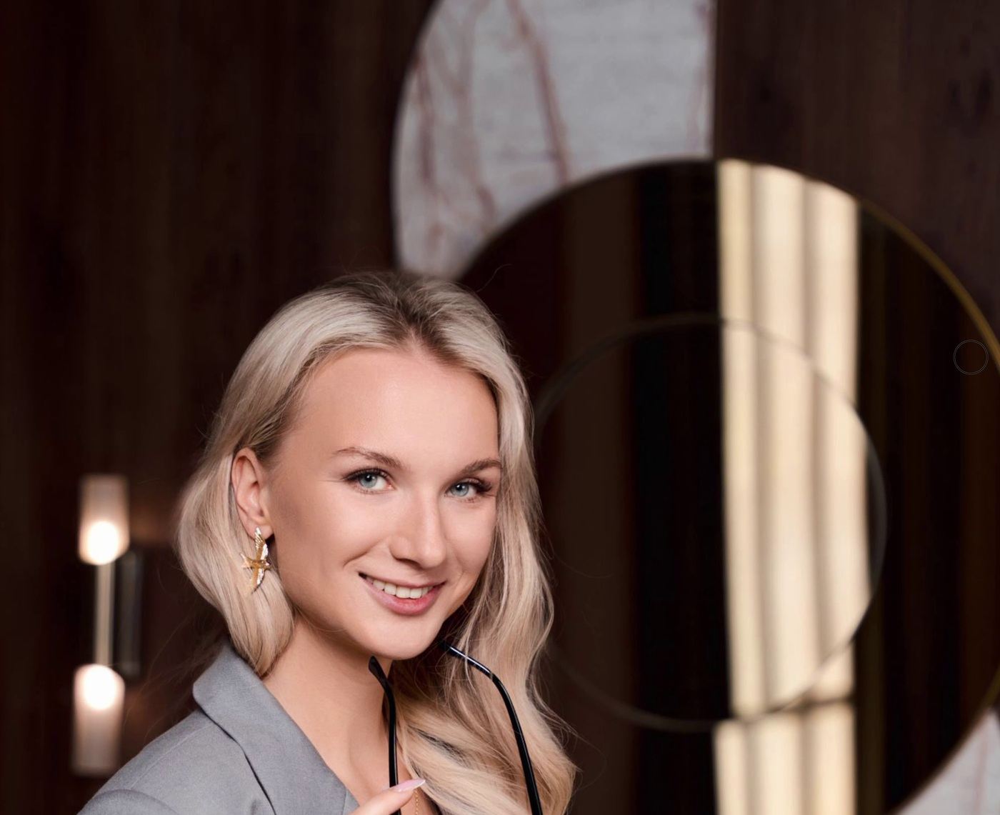
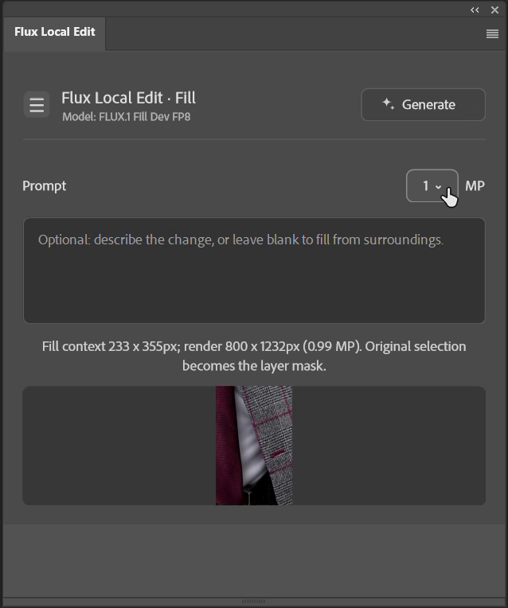
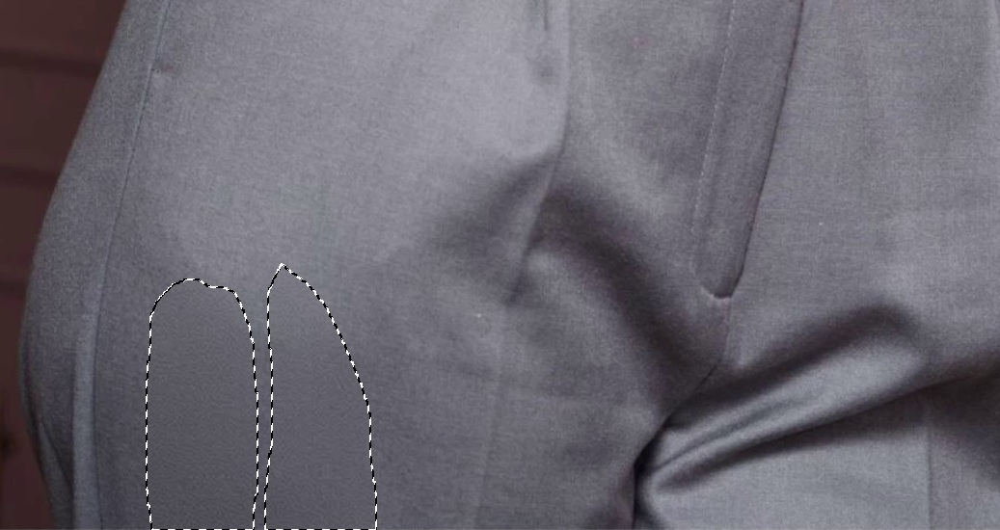
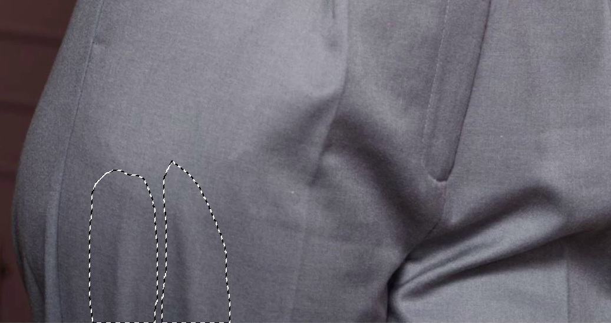
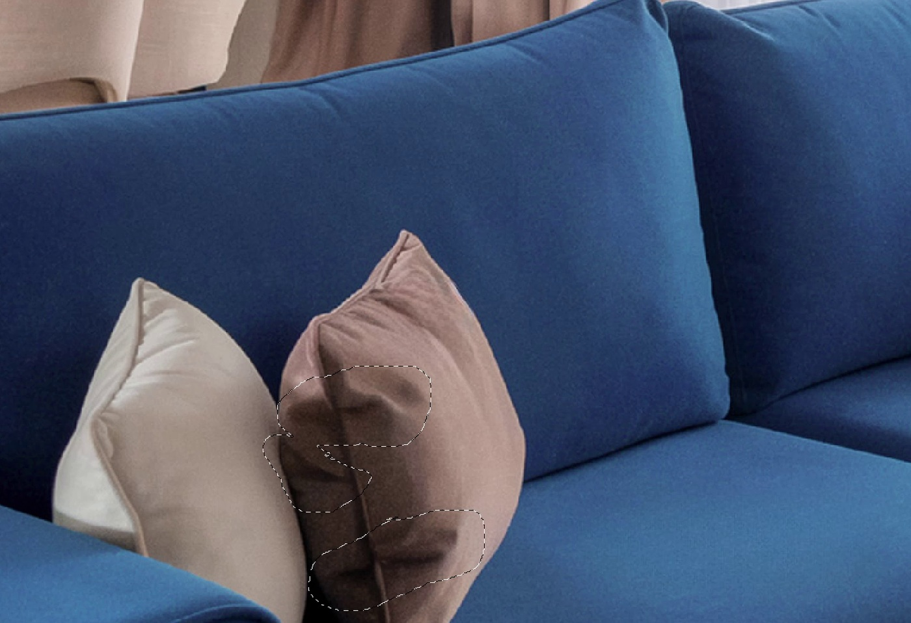
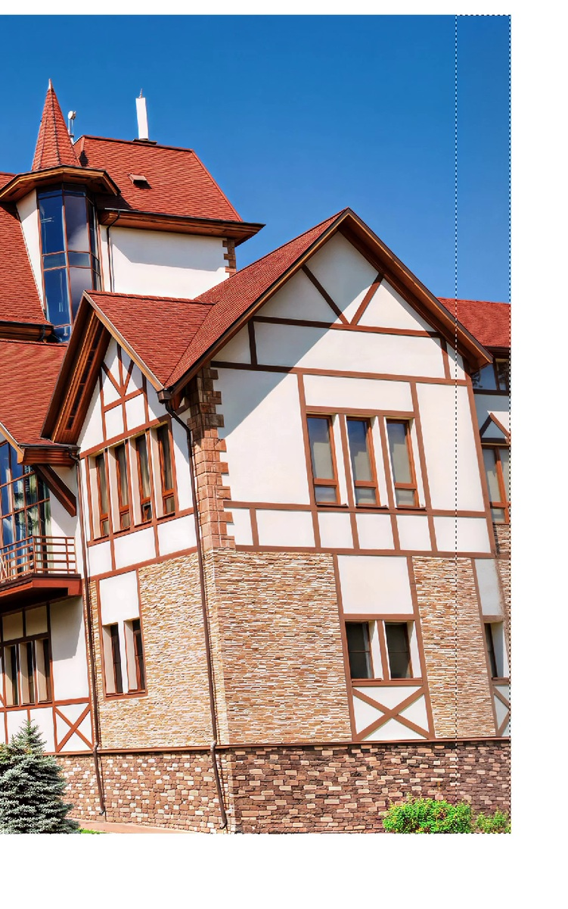
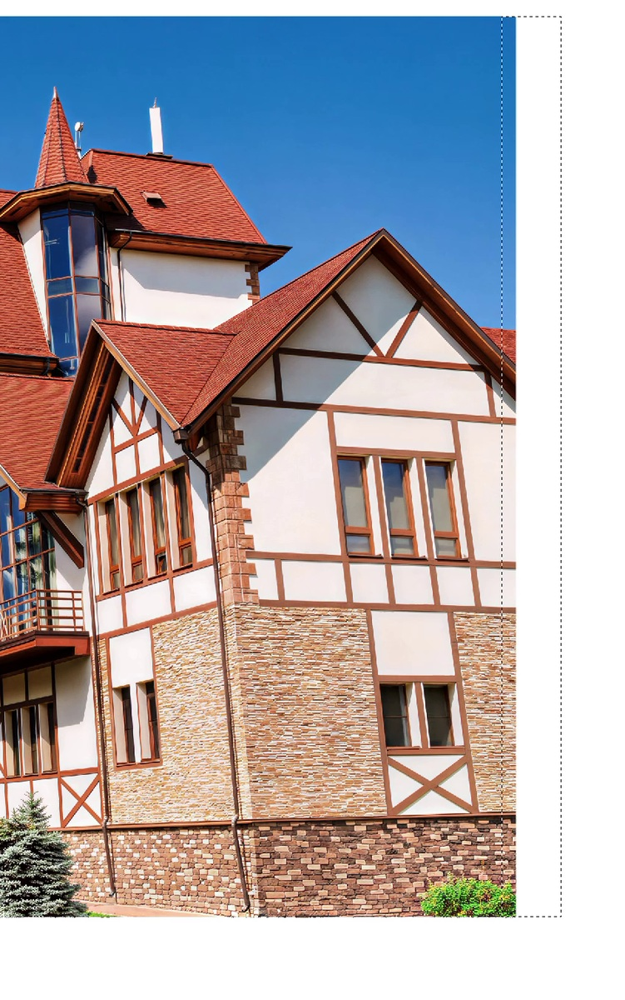

Версия 0.1.6. Photoshop 25.0+. Локальная генерация, без ключа платного API.


ДоПосле
Реальная правка Fill: лампа на фоне. Фрагмент записи, без дополнительной цветокоррекции.
1
Выделите участок Привычными инструментами Photoshop
2
Запустите генерацию Плагин отправит граф в ComfyUI
3
Сравните новый слой Оригинал остаётся в документе
Две модели. Разные задачи.
В шапке панели всегда видно, какой режим и какая модель выбраны. Переключатель открывается нажатием на весь блок названия.

Панель версии 0.1.6 в Photoshop автора.
Fill
FLUX.1 Fill Dev FP8
Когда нужно заполнить выделенную область, убрать деталь или поправить ткань. Поддерживает лассо, растушёвку и несколько раздельных выделений.
Модель получает участок с окружением и маску. Новый слой возвращается с маской исходной формы.
Edit
FLUX.2 Klein 9B FP8
Когда удобнее описать изменение словами: поменять цвет, материал или деталь. При необходимости можно добавить Reference.
В этом релизе нужен сплошной прямоугольник. Edit перегенерирует выбранный участок, это другой процесс, чем масочный Fill.
Выбор режима меняет следующий запрос. Модели загружаются при Generate, а памятью видеокарты управляет ComfyUI.
Посмотрите на результат.
Несколько задач из записей работы автора. Все показанные примеры сделаны в Fill. Качество зависит от снимка, выделения и запроса.
Складки на одежде
Локальная правка ткани без перегенерации всего портрета.


ДоПосле
Посмотреть процесс, 17 секунд
Подушка в интерьере
Несколько участков лассо становятся одной маской нового слоя.

ДоПосле
Посмотреть процесс, 17 секунд
Больше места у края кадра
Увеличьте холст в Photoshop, выделите незаполненную область с перекрытием края и запустите Fill. Здесь модель продолжает небо и архитектуру справа.
Посмотреть процесс, 15 секунд


ДоПосле
Посмотреть процесс правки лампы, 22 секунды
Видео смонтированы из настоящих записей: ожидание вырезано, скорость показанных фрагментов не менялась. Ползунки и GIF сравнивают конкретные кадры до/после. Это не измерение скорости генерации.
От скачивания до первого слоя.
В инструкции есть вся цепочка. Что скачать, куда положить семь файлов моделей и как проверить, что Photoshop видит панель, а ComfyUI готов к генерации.
CCX для обычной установки. Исходники и manifest для UXP Developer Tool.
ComfyUI и модели
Официальные источники, точные имена и папки. Отдельное объяснение подготовки Fill FP8.
Первый запуск
Примеры запросов, 1 MP для старта, Fill/Edit, новый слой и маска.
Перед установкой
Нужно ли каждый раз собирать граф в ComfyUI?
Нет. Плагин отправляет свой граф автоматически. Запустите ComfyUI на 127.0.0.1:8188 и установите модели. Комплектный шаблон пригодится, если хотите проверить Edit отдельно в ComfyUI.
Фотографии отправляются в облако?
При указанном localhost-адресе они обрабатываются вашим ComfyUI на компьютере. Учтите, что ComfyUI сохраняет входные файлы и результаты на диске. Сторонние расширения и права на фотографии вы контролируете самостоятельно.
Что происходит без текста запроса?
Fill достраивает содержимое по окружению. Это не гарантированное удаление: модель иногда добавляет лишнее. Напишите, что должно остаться в выделенной области, если нужна более управляемая правка.
Будут ли цвет и детали точно совпадать?
Не всегда. Возможны сдвиг цвета, швы и изменения геометрии. Иногда помогают другой запрос, повторная генерация, маска, кривые или уровни. Это вспомогательный инструмент ретуши, не обещание идеального результата.
Можно установить без Creative Cloud?
У автора панель нативно установлена в конкретный portable Photoshop 27.8. Для его лаунчера есть отдельная инструкция. Для других сборок этот способ не гарантируется. UXP Developer Tool можно использовать, если он уже доступен.
Что с бесплатностью и коммерческой работой?
Панель доступна для скачивания и не требует платного API. Лицензии Photoshop и моделей действуют отдельно. У Fill Dev и Klein 9B есть ограничения использования весов; условия результатов описаны отдельно. Проверьте Fill, Klein 9B и BFL Licensing перед коммерческим применением.
Попробуйте на одном участке.
Сохраните фотографию, сделайте небольшое выделение и начните с 1 MP.